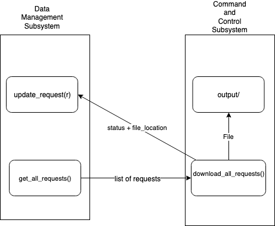

The Command and Control subsystem is the subsystem responsible for converting the requests that have been collected into downloaded data to be distributed to users. It starts by receiving a list of request objects - a structure for containing information about each request in Python. To prevent confusion, the mono-spaced request will refer to they Python object itself, whereas plain “request” refers to the concept of a user request.
With this list of requests, the first thing it does is use the Python multiprocessing[1] library to split work up between the different threads on the computer. While this software is designed for low end machines to be more accessible to developing areas, most computers[2] in recent times will have more than 1 CPU core (including the Raspberry Pi[3]). This allows for the processor to split up all the requests, and execute them in parallel, instead of waiting for each one to finish individually, which can provide an decrease in time spent downloading files, as explored in section 4.2.
When downloading a request, it determines the type of request. The types are URL, search, YouTube, and ipfs. Figure 1 is the flow chart to determine the method used for downloading an asset.
The steps for each type of request is outlined below.
URLs are your basic websites, such as https://en.wikipedia.org/wiki/Monty_Python_and_the_Holy_Grail, or https://www.nytimes.com/2019/03/27/technology/turing-award-ai.html. This is for users who already know the content they want. In the backend, the Python program is going to use the wget utility. Specifically, wget -E -H -k -K -p -P path url robots=off where path is the output directory and url is the url that has been requested. Each of those letters does something to modify the request to created the desired behavior. For example, -p tells wget to download pictures and things linked on the website so the page appears exactly as it would in a web browser. More details for each option can be found in the wget documentation[4]. All of those options ensures that downloading the URL requested gets the website exactly as it appears in a browser, including linked images. Additionally, it works with PDF and ZIP files, which is really important to ensure all possible media can be obtained. This method is also used by other parts of the program.
Sometimes the user will not know exactly what they want, so functionally was added to get the first page of Google search results (top 10 results). The googlesearch[5] library was very helpful for this. This library provides a list of the URL’s on the first page of a Google Search. With that list, the established URL method described in section 1.1 is used to download each URL (it also checks to ensure to use the YouTube method if it is a YouTube link). The results are each in their own folder named based on the Google search rank (1 is first result, 2 is second result, etc).
It is well known that lot of quality educational and entertainment content is in video format, and the majority of that content is on YouTube. That is why the users can request YouTube videos (through a link, or a result from the search function). In this case, the youtube-dl[6] program allows for content retrieval. A user can either request a YouTube video directly, or use the URL method which will detect the YouTube link and use this method.
IPFS stands for “InterPlanetary File System”, which is a “A peer-to-peer hypermedia protocol to make the web faster, safer, and more open”[7]. The internet that is familiar to most people is the client-server model[8], but IPFS changes that so everyone is both a client and a server. Media is distributed based of the crytographic hash, a unique ID for each object, instead of a URL. Anybody can add objects, and when requesting an object, it can be downloaded from any number of servers, not just the original person hosting the server. The ipfs command line utility[9] is used to retrieve objects. This greatly expands the functionality of our product, because the operator can now do some content retrieval with no access to the internet. If two of these backpacks meet where there was no internet, they can easily exchange content on the IPFS, which could increase speed and decrease the cost of retrieval for those requests.
Software is all about abstraction, so it is important to clearly define where the Command and Control subsystem will interface with the other subsystems. Ideally, all the other subsystems will work independently and a couple of links will get everything working together. These links are shown in Figure 2, and explained in further detail below. The interfaces are left inside the Python code in the appendix of this document, just commented out with the # character.
Most of the meshing is done through the request object, which can be found in the appendix.
Python, like all programming languages, only stores objects in memory while the program is running. That means when the program is shut down (or the machine is powered off), the data generated must be saved somewhere on the device or else that information would be lost. In this case, what is important is to be able to store the request objects. This is completed by the data management subsystem. This means my subsystem will call get_all_requests() which will retrieve the data from the hard drive of the machine about the requests, create the objects again (as they where destroyed from memory when the program shut down), and return that information to Command and Control.
Once my subsystem completes it’s download, it needs to update the database about the new status. This is again through the Data Management subsystem. To ensure each object is downloaded only once, each request has two properties: file_location and downloaded_status. Once Command and Control has completed a download, it will call the Data Management method update_request(r) where r include the changes to file_location and downloaded_status. So the Data Management subsystem knows which database entry to update, a Universally Unique Identifier (UUID)[10] is used to identify each request.

The primary concern for the Command and Control subsystem is ensuring that the primary forms of retrieval are supported. In an interview with Anthony Wanjiru, who lived in Kenya for 35 years, he said the most important types of content are either a URL (either as a web page, pdf, etc), YouTube, Google Searches, and while IPFS isn’t widely used, it has a lot of potential[13]. He also said that local content is on the rise, and a method to upload content would be really beneficial. While this was not implemented at this time, due to specifics with integration with the other subsystems, this could be implemented later.
Due to the emphasis of using our system in low income areas, all software that is used in this process is free to use and distribute. This optimizes the number of people that can use this software.
Testing is one of the most fundamentally important things in software development. It is easy to write code, but it is not useful if it can’t work under a variety of difficult tests. A handful of curated tested designed to test the boundaries of the code have been picked. To verify the results, there are two primary methods. The first, is a SHA-512 sum, which is a crytographically secure way to ensure two files are the same[11], the first file being originally from a manual download, and the second one from the Command and Control Subsystem Python program. If the two hashes are the same, the subsystem was successful. However, this cannot be used for all tests, because when downloading from a website, the original HTML files are modified for browsing offline (see the -k option on wget). This makes it impossible to cryptographically ensure that the requested file is the same as the downloaded file, so a visual analysis is preformed to analyze the two documents and ensure that they are identical. The table below explains the tests preformed, where the “Analysis Method” is either visual or hash to preform the check.
| Type | Value | Expected Result | Analysis Method | Expected = Actual? |
| URL | https://www.gutenberg.org/cache/epub/2265/pg2265.txt | Text of “Hamlet” By Shakespeare | Hash | Yes |
| URL | https://static.googleusercontent.com/media/research.google.com/en//pubs/archive/46507.pdf | PDF of Google Machine Learning Research Paper | Hash | Yes |
| URL | https://en.wikipedia.org/wiki/Monty_Python_and_the_Holy_Grail | Wikipedia entry for “Monty Python and the Holy Grail” | Visual | Yes |
| YouTube | https://www.youtube.com/watch?v=Gbtulv0mnlU | NASA Shuttle Recovery Video | Visual | Yes |
| search | What Is the Airspeed Velocity of an Unladen Swallow? | Google search results | Visual | Yes |
| ipfs | /ipfs/QmS4ustL54uo8FzR9455qaxZwuMiUhyvMcX9Ba8nUH4uVv/readme | IPFS introduction document | Hash | Yes |
| ipfs | /ipfs/QmVLTMHtLRhnft3QspDx4qTJeXY6hiib1j77UfQmY54CGe/mosaic.png | 300 MB picture of the moon | Hash | Yes |
The other important validation is to ensure that the multi threading described in section 1 improves results. I ran the program with 8 fairly large requests and used the time[12] utility to measure the run time of the program. The results are shown below:
| 1 Core | 2 Cores | 4 Cores | 8 Cores |
| 161.277 seconds | 53.927 seconds | 45.984 seconds | 46.448 seconds |
From this data, it is clear that the multi threading is successful in decreasing the time required to download multiple requests. Further work could be done to multi thread the googlesearch library, as the current multi threading solution does not support sub threads.
Below is the reasoning for each software library and tool picked. It also acts as a requirements list.